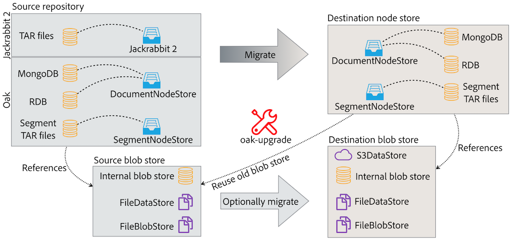
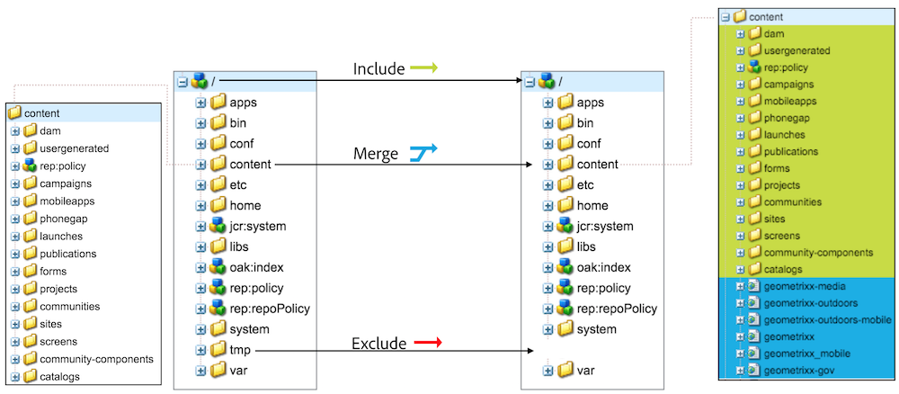
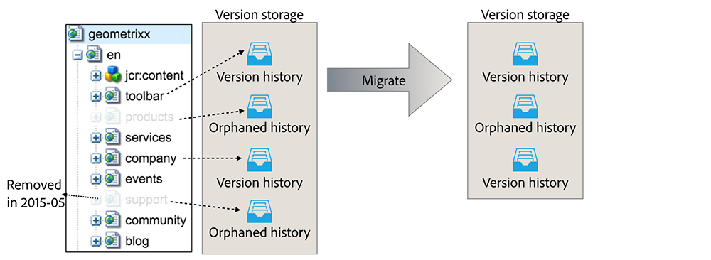

Oak offers a few tools which can be used to migrate the old, Jackrabbit 2 repository and also to copy content between Oak instances. oak-upgrade is a Swiss army knife for copying content between virtually any repositories. On the other hand, the SplitBlobStore allows to copy the binaries gradually, from one blob store to another, without having a long repository downtime.

The oak-upgrade module allows to do an upgrade from the classic Jackrabbit 2.0 repository to the Oak node store and also to sidegrade from one nodestore type to another. Besides from that it has a number of features that can be useful in everyday system maintenance:
oak-upgrade module creates an executable jar file. It can be invoked like this:
java -jar oak-upgrade-*.jar [options] source destination
The source and destination are the node store paths/URIs. Following node stores are supported:
Following parameters should be used for the JDBC node store:
Examples:
java -jar oak-upgrade-*.jar \
path/to/the/repository \
mongodb://localhost:27017/oak
java -jar oak-upgrade-*.jar \
--user=sa --password=sa \
mongodb://localhost:27017/oak \
jdbc:h2:path/to/repo
In order to upgrade Jackrabbit 2 repository to the new node store, pass the path to the repository directory as the source parameter. Optionally, you may also pass the path to the repository.xml file as a separate parameter. Examples:
java -jar oak-upgrade-*.jar \
path/to/the/jr2/repository \
path/to/repository.xml \
path/to/the/new/repository
java -jar oak-upgrade-*.jar \
path/to/the/jr2/repository \
mongodb://localhost:27017/oak
By default, the oak-upgrade only copies the binary references, so you need to reuse the same blob/data store in the new repository. However, it’s also possible to migrate binaries as well using the --copy-binaries parameter. Following migration paths are possible for the binaries. The internal means that the binaries are stored inside the segment or document node store:
| From ↓ To → | Internal | FileBlobStore | FileDataStore | S3 |
|---|---|---|---|---|
| Internal | Yes² | Yes | Yes | Yes |
| FileBlobStore | Yes | Yes² | Yes | Yes |
| FileDataStore | Yes | Yes | Yes² | Yes (not recommended)¹ |
| S3 | Yes | Yes | Yes | Yes² |
¹ The S3DataStore will take care of this migration automatically, no need to use oak-upgrade
² The storage might be simple cloned without using oak2oak
Following parameters can be used to define the source and the destination blob stores:
| Blob store type | Source parameter | Destination |
|---|---|---|
| FileBlobStore | --src-fileblobstore=... | --fileblobstore=... |
| FileDataStore | --src-datastore=... | --datastore=... |
| S3 | --src-s3config=... --src-s3datastore=... | --s3config=... --s3datastore=... |
Use the --copy-binaries parameter to instruct the oak-upgrade to copy binaries.
Example:
java -jar oak-upgrade-*.jar \
--copy-binaries \
--src-datastore=/old/repository/datastore \
--fileblobstore=/new/repository/datastore \
/old/repository \
/new/repository
Using S3DataStore as a source or destination for binaries requires passing two arguments: s3datastore and s3config. The first one should point to the datastore directory (eg. crx-quickstart/repository/datastore). The second should be used to define the org.apache.jackrabbit.oak.plugins.blob.datastore.S3DataStore.cfg configuration file path. File should have following format:
accessKey=... secretKey=... s3Bucket=... s3Region=eu-west-1 s3EndPoint=s3-eu-west-1.amazonaws.com connectionTimeout=120000 socketTimeout=120000 maxConnections=40 writeThreads=30 maxErrorRetry=10
For the region and endpoints please visit the Amazon documentation.
Alternativly the *.config file format, described on the Apache Sling website, can be used as it may be convenient for re-using existing OSGi configuration files.

It’s possible to define a list of content subtrees to include or exclude during the migration. By default, the whole repository gets copied. In order to copy only a subtree, use the --include-paths. For example, the following command will copy only the /content/site and /content/other_site subtrees:
java -jar oak-upgrade-*.jar \
--include-paths=/content/site,/content/other_site \
/old/repository \
/new/repository
You may also exclude specific paths from being copied. Following command will copy the whole content without the /content/redundant_site:
java -jar oak-upgrade-*.jar \
--exclude-paths=/content/redundant_site \
/old/repository \
/new/repository
By default, the source repository replaces the destination repository (if there’s one). For instance, in the first example if the /content/site node already exists in the destination repository, it’ll be removed and replaced by the source node. It’s also possible to merge content from the source repository with --merge-paths:
java -jar oak-upgrade-*.jar \
--include-paths=/content/site \
--merge-paths=/content/site \
/old/repository \
/new/repository
Please notice that in the last example it’s necessary to narrow the migration scope using --include-paths parameter.

By default, the whole version storage is migrated. This includes referenced version histories (their versionable node still exists in the repository) and orphaned ones (their versionable node no longer exists). oak-upgrade allows to skip the orphaned version histories to make the migration faster and the destination repository smaller. It’s also possible to define a maximum age for the version histories (both referenced and orphaned) to be copied.
There are two parameters: --copy-orphaned-versions and --copy-versions. Both accepts boolean values or a YYYY-MM-DD date. Examples:
# only copy referenced versions
java -jar oak-upgrade-*.jar \
--copy-orphaned-versions=false \
/old/repository /new/repository
# don't copy any versions at all
java -jar oak-upgrade-*.jar \
--copy-versions=false \
/old/repository /new/repository
# copy referenced versions created after 2010
# and orphaned version created after 2011
java -jar oak-upgrade-*.jar \
--copy-versions=2010-01-01 \
--copy-orphaned-versions=2011-01-01 \
/old/repository /new/repository
If an existing repository is passed as the destination, then only a diff between source and destination will be migrated. It allows to migrate the content in a few iterations. For instance, following case is possible:
The migration might be stop at any time using ^C. Resume the migration running the same command which was used to start it.
It’s possible to inject custom logic into the upgrade process, by implementing RepositoryInitializer or CommitHook.
In order to do that, create a new Maven project, with appropriate implementation. Then create following file:
src/main/resources/META-INF/services/org.apache.jackrabbit.oak.spi.commit.CommitHook
The file should contain just one line - the name of the class with the CoomitHook implementation. Build the project and attach the JAR to the oak-upgrade class path:
java -cp my-commit-hook.jar:oak-upgrade-*.jar org.apache.jackrabbit.oak.upgrade.cli.OakUpgrade [normal oak-upgrade parameters]
A custom RepositoryInitializer can be injected in a similar way.
When migrating an old SegmentMK repository (pre-Oak 1.6) to the new SegmentMK (Oak >= 1.6), the checkpoints are migrated as well. This allows to avoid reindexing when the Oak is being run for the first time on the new repository. However, the checkpoints won’t be migrated in following cases:
In the second case oak-upgrade emits following warning and breaks:
Checkpoints won't be copied, because no external datastore has been specified. This will result in the full repository reindexing on the first start. Use --skip-checkpoints to force the migration or see https://jackrabbit.apache.org/oak/docs/migration.html#Checkpoints_migration for more info.
The easiest way to fix this issue is specifying the source datastore in the command line options (eg. --src-datastore or --src-s3datastore).
The warning may also be ignored, but in this case the repository will be fully reindexed on the first startup. It may be a long process, especially for the big instance. Repository won’t be usable until the reindexing process is done. Use --skip-checkpoints option to suppress the warning.
Oak offers one more way to migrate blob store, without turning off the instance (a few restarts might be required, but the migration process is done during normal repository operation).
There is a SplitBlobStore implementation, that takes two blob stores: the old (already existing) and the new (empty) one. After configuring Oak to use it, all write requests are proxied to the new repository. The read requests uses the old or the new repository, depending on the blob id (SplitBlobStore saves all the new blob ids).
Besides from the new blob store implementation, there is a process (controlled by JMX) which migrates binaries between stores. When all binaries are migrated, the SplitBlobStore can be disabled as well as the old store.
These steps should be followed for migration from FileBlobStore, FileDataStore or S3DataStore.
Create a configuration for the org.apache.jackrabbit.oak.spi.blob.osgi.SplitBlobStoreService.
split.old.blobstore.type=INTERNAL # optional: repository.home=crx-quickstart/repository
These steps should be followed for migration from MongoBlobStore or for blobs embedded in the SegmentNodeStore.
Create a configuration for the org.apache.jackrabbit.oak.spi.blob.osgi.SplitBlobStoreService.
# use DOCUMENT or SEGMENT, depending on the NodeStore type: split.old.blobstore.type=SEGMENT # optional: repository.home=crx-quickstart/repository
After starting the instance, the SplitBlobStoreService will wait until blob stores with split.blobstore properties (the old and the new) are available. They will be bound and the SplitBlobStore will be registered in the OSGi. On the other hand, the NodeStoreService will ignore blob stores configured with the split.blobstore property and will wait until the SplitBlobStore is available.
From this point, all the new blobs will be saved in the new blob store. Binaries from the old blob store will be available to read.
The split.blobstore property support was added to FileBlobStore, AbstractDataStoreService (handling all Jackrabbit data stores), DocumentNodeStoreService and SegmentNodeStoreService.
The migration can be stopped using stopBlobMigration() and then resumed with startBlobMigration(true). The current stats are available via the JMX as well:
When the migration is finished, it’s possible to completely switch to the new blob store:
Migration is now complete!